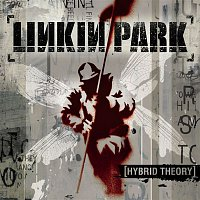
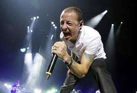
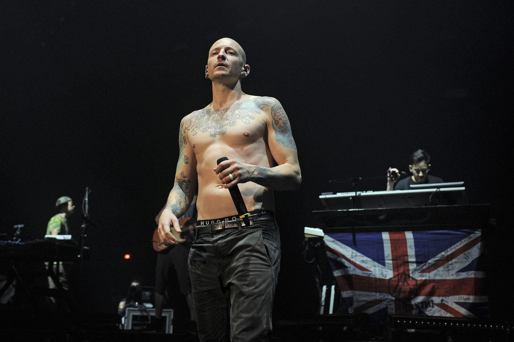
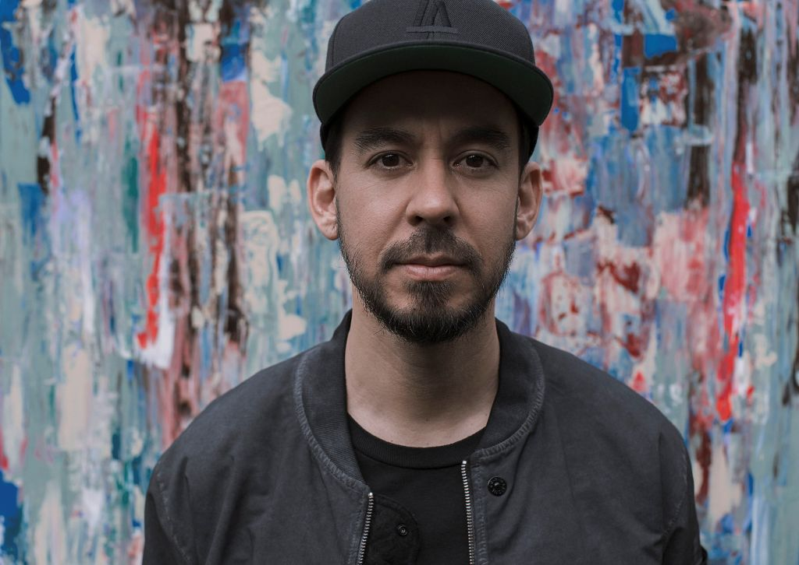

Historie Linkin Park od prvních začátků po současnost
Začátky kapely

Vše začalo v Agoura Hills v Kalifornii, spolužáci Mike Shinoda, Brad Delson a Rob Bourdon chtěli vytvořit kapelu, která by spojovala rock, rap a elektronické prvky. K nim se přidal Joe Hahn (DJ) a Dave "Phoenix" Farrell (baskytara). Nahrávali v Mikeově ložnici, která sloužila jako malý domácí studio.Kapela hledala nového zpěváka a nahrávací společnosti jim doporučily zpěváka z Arizony: Chester Bennington.Chester si osobně přepracoval jejich demo, nahrál k němu vlastní vokály a poslal jim výsledek, ten je okamžitě ohromil. Prakticky okamžitě ho pozvali do kapely. Kapela si tehdy říkala Xero.
Celosvětový průlom

24. října 2000 vyšlo debutové album Hybrid Theory, které spojovalo rap, křik, melodické refrény, elektroniku i tvrdé kytary, styl, který tehdy neměl obdoby.
Největší hity:
In the End – jeden z největších hitů své doby
Crawling – získala Grammy za nejlepší metalovou skladbu
One Step Closer
Papercut
Kapela mezi roky 2001 až 2002 témeř nepřetržitě koncertovala po celém světě.
Hudební proměny

Po prvních dvou albech, která definovala nu-metalový žánr a přinesla kapele celosvětovou popularitu, se Linkin Park rozhodli, že nechtějí zůstat u stejného stylu. Chtěli se jako hudebníci vyvíjet a neustále hledat nové směry, a právě proto se jejich tvorba v následujících letech výrazně proměnila. Zásadní zlom nastal v roce 2007 s vydáním alba Minutes to Midnight. Kapela se vzdálila od tvrdého nu-metalového zvuku, který je proslavil, a začala se orientovat na alternativní rock. Písně měly čistší a otevřenější zvuk, méně rapových pasáží a více melodických refrénů. Texty se zaměřily na vážnější a často i politická témata. Bylo to album, které ukázalo, že se Linkin Park nebojí změn, i když riskují, že ztratí část fanoušků.
Tento experimentální přístup se naplno projevil na albu A Thousand Suns z roku 2010. Kapela se pustila do radikálního posunu směrem k elektronice, ambientu a futurálním zvukům. Vzniklo konceptuální dílo, které zpracovává témata války, technologie, lidské zodpovědnosti a strachu z budoucnosti. Skladby méně sázely na klasickou rockovou strukturu a více na atmosféru, vrstvení elektronických efektů a emotivní vyprávění. Pro mnoho fanoušků to byl šok, ale postupem času je album považováno za jedno z nejodvážnějších a umělecky nejzajímavějších v jejich diskografii.
Následující album Living Things z roku 2012 představovalo jakýsi návrat ke kořenům, ale s modernější produkcí. Linkin Park zde propojili elektronické experimenty z předchozího alba s energií a melodičností, která připomínala jejich starší tvorbu. Do popředí se vrátil rap Mika Shinody a skladby působily přístupněji, i když si zachovaly experimentální prvky.
Pozdní období s Chesterem

V pozdním období své kariéry se Linkin Park znovu výrazně proměnili. Po tvrdším albu The Hunting Party z roku 2014, na němž se Chester prezentoval dravým, agresivním vokálem a kapela se pokusila vrátit rocku ztracenou energii, se rozhodli udělat další velký obrat. Jejich poslední album s Chesterem, One More Light (2017), bylo mnohem jemnější, popovější a osobnější. Chester zde ukázal svou citlivější stránku – jeho zpěv byl plný emocí a odrážel jeho vnitřní boj i touhu být upřímný vůči sobě i fanouškům. Přestože album rozdělilo posluchače, pro kapelu mělo velký význam. Bohužel se stalo posledním projektem, na kterém Chester pracoval, a jeho smrt roku 2017 uzavřela jednu z nejdůležitějších kapitol v historii Linkin Park.
Neaktivní období

Neaktivní období Linkin Park nastalo především po roce 2017, po tragické smrti Chestera Benningtona. Kapela pozastavila veškerou činnost, zrušila turné a nepracovala na nových projektech. I dříve se krátkodobě objevovala pauza mezi jednotlivými alby, například mezi A Thousand Suns (2010) a Living Things (2012) nebo mezi Living Things a The Hunting Party (2014), kdy členové věnovali čas individuálním projektům, produkci, spolupráci s jinými umělci a odpočinku. Neaktivní období bylo vždy spojeno s regenerací, hledáním nového směru a osobními záležitostmi členů kapely. Po Chesterově smrti se však toto neaktivní období stalo definitivním – kapela od té doby žádnou novou hudbu nevydala a zůstává v tichu, připomínána jen svou minulou tvorbou a koncertními záznamy.
Současnost
Po dlouhé pauze se Linkin Park vrátili s novou sestavou. K původním členům Mikeu Shinodovi, Joe Hahnovi, Dave „Phoenixovi" Farrellovi a Bradovi Delsonovi přibyli noví členové – zpěvačka Emily Armstrong a bubeník Colin Brittain. Kapela vydala nový singl „The Emptiness Machine" a chystá album s názvem From Zero, které symbolizuje nový začátek a návrat ke kořenům. Současně plánují turné „From Zero World Tour". Nová éra kapely přináší čerstvou energii a zvuk, přestože fanoušci mají smíšené reakce vzhledem k absenci Chestera Benningtona.